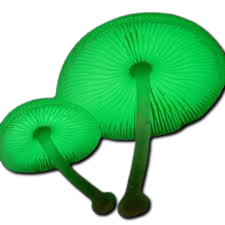
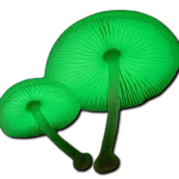

Descripción morfológica
Mycena chlorophos, conocido como "hongo bioluminiscente", es un pequeño basidiomiceto de la familia Mycenaceae. Sus cuerpos fructíferos miden 0.5-2 cm de diámetro, con sombreros convexos aplanados de color marrón pálido translúcido y margen estriado. Las láminas son adnatas, blancas y espaciadas. El pie (1-3 cm de altura) es delgado, hueco y del mismo color que el sombrero. La característica más notable es su intensa bioluminiscencia verde-azulada (λmax = 520-530 nm) en las láminas y pie, visible hasta 20 metros en oscuridad total.
Características únicas
- Bioluminiscencia: Causada por la enzima luciferasa que oxida luciferina en presencia de O₂ y ATP.
- Himenóforo: Láminas que brillan más intensamente que otras partes (hasta 1.5×10¹² fotones/min).
- Hábito: Crece en densos grupos sobre madera en descomposición.
- Variación: Intensidad lumínica depende de temperatura (óptimo: 27°C) y humedad.
Distribución y hábitat
Especie pantropical que habita bosques húmedos de Asia (Japón, Taiwán, Sri Lanka), Oceanía (Australia, Polinesia) y América (Brasil). Coloniza troncos, ramas y hojarasca de árboles como Eucalyptus y Pandanus. Requiere humedad relativa >90% y aparece en la estación lluviosa (mayo-octubre en el hemisferio norte). Su bioluminiscencia es más intensa en primordios jóvenes (24-48 horas post-emergencia), atenuándose al madurar.
Condiciones ecológicas
- Sustrato: Madera en estado intermedio de descomposición (celulosa/hemicelulosa).
- Microclima: Temperaturas estables (25-28°C) y oscuridad casi permanente.
- Asociaciones: Compite con otros hongos saprótrofos mediante metabolitos antimicrobianos.
Bioquímica y función adaptativa
El sistema luciferina-luciferasa de M. chlorophos difiere molecularmente del de animales luminiscentes. La luz producida (0.5-2 lux) sigue un ritmo circadiano, maximizándose entre las 20:00-02:00 horas. Estudios sugieren que la bioluminiscencia atrae artrópodos nocturnos (coleópteros, dípteros) que dispersan esporas. Cada cuerpo fructífero produce ~10⁸ esporas/hora durante 2-3 noches. El genoma secuenciado (34 Mb) reveló clusters génicos únicos para síntesis de precursores luminiscentes.
Mecanismo luminiscente
- Síntesis: Vía del ácido cafeico produce preluciferina en mitocondrias.
- Activación: Luciferasa (67 kDa) oxida luciferina usando O₂ y Mg-ATP.
- Emisión: Fotones liberados al regresar electrones a estado basal.
Importancia científica y aplicaciones
| Área | Aplicación |
|---|---|
| Biotecnología | Genes de luciferasa como marcadores en ingeniería genética |
| Medioambiente | Bioindicador de bosques primarios no perturbados |
| Turismo | Atracción en reservas naturales (ej: Bosque de bambú en Japón) |
Cultivo y observación
- Sustrato artificial: Serrín esterilizado de haya/roble con 2% de melaza.
- Condiciones: 25°C, 95% humedad, oscuridad hasta aparición de primordios.
- Fotografía: Exposiciones de 30 seg a ISO 6400 (f/2.8) captan mejor la luminiscencia.
Conservación y amenazas
- Vulnerabilidad: Sensible a deforestación y contaminación lumínica.
- Protección: Incluido en listas rojas de biodiversidad en Malasia y Borneo.
- Recomendaciones: Uso de luces rojas (<600 nm) en áreas de observación.
Datos fascinantes
- Inspiró escenas luminiscentes en la película "Avatar" (James Cameron).
- Tribus amazónicas lo usaban como "linterna natural" en rituales nocturnos.
- Su luz es 100 veces más eficiente que un LED comercial (98% energía convertida en luz).